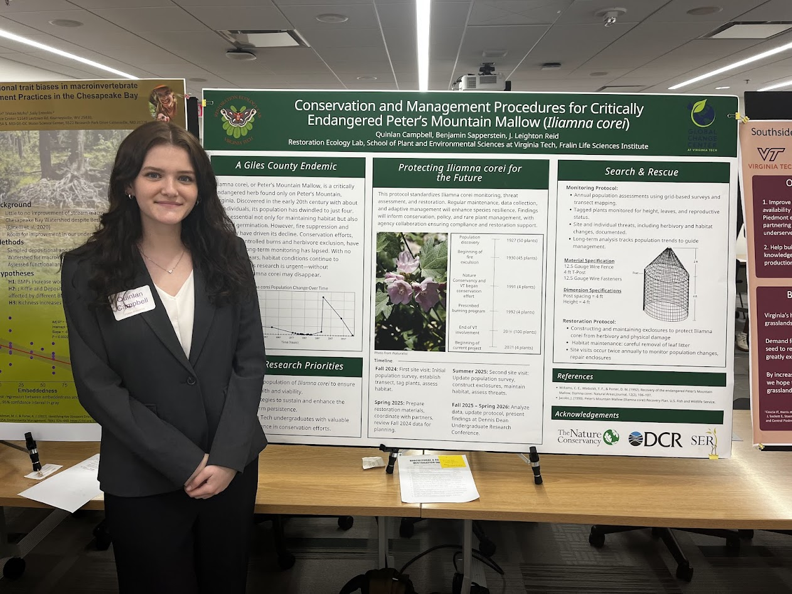
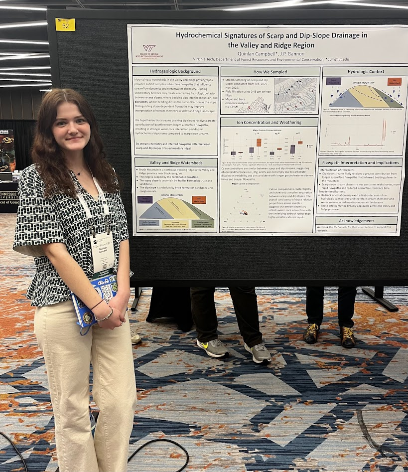
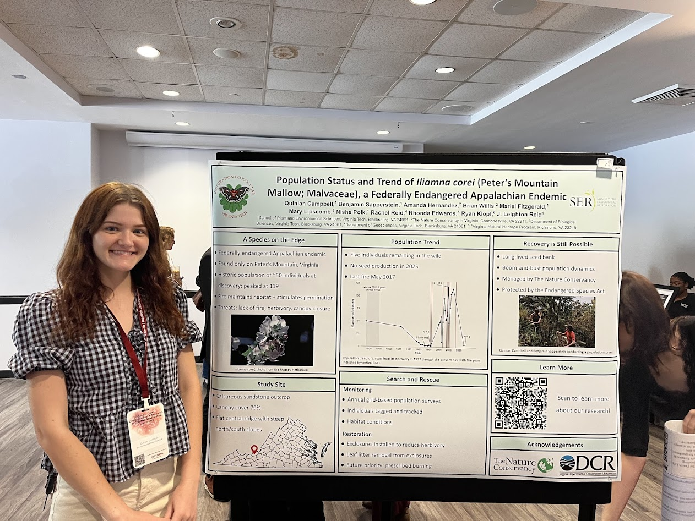
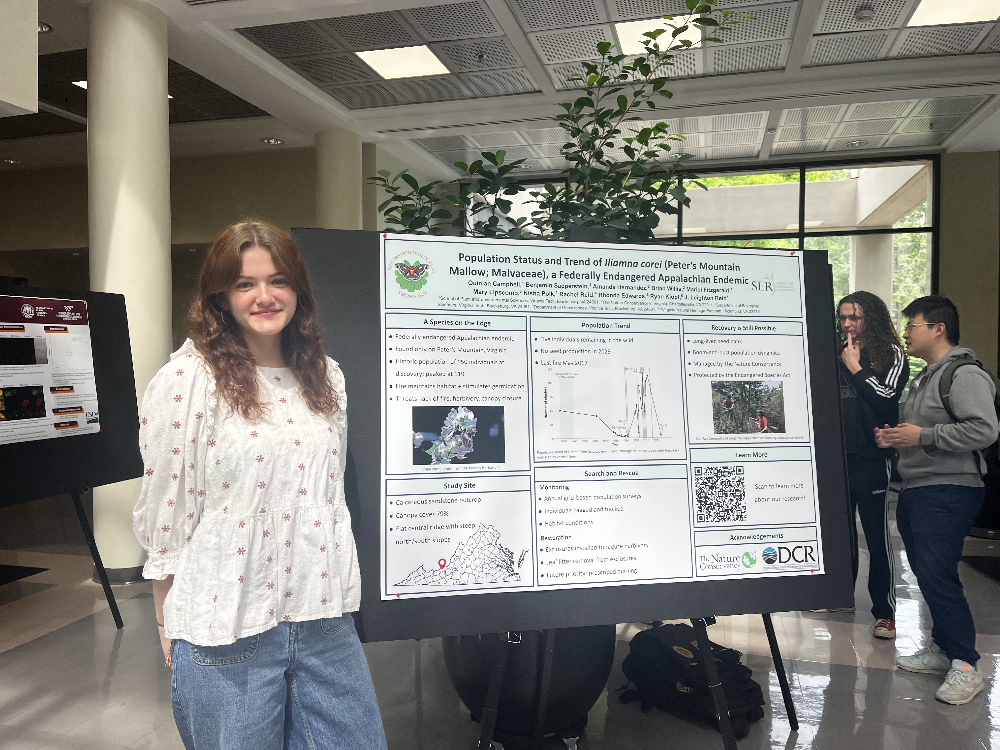

Campbell, Q., Sapperstein, B., Reid, J.L.
Conservation and Management Procedures for Critically Endangered Peter's Mountain Mallow (Iliamna corei).
Biological and Ecological Restoration Initiative Symposium, Blacksburg, VA, 2025.

Campbell, Q., Gannon, J.P.
Hydrochemical Signatures of Scarp and Dip-Slope Drainage in the Valley and Ridge Region.
Geological Society of America, Memphis, TN, 2026.

Campbell, Q., Sapperstein, B., Reid, J.L.
Population Status and Trend of Iliamna corei (Peter's Mountain Mallow; Malvaceae).
Dennis Dean Undergraduate Research and Creative Scholarship Conference, Blacksburg, VA, 2026.

Campbell, Q., Sapperstein, B., Reid, J.L.
Population Status and Trend of Iliamna corei (Peter's Mountain Mallow; Malvaceae).
SPES Symposium, Blacksburg, VA, 2026.